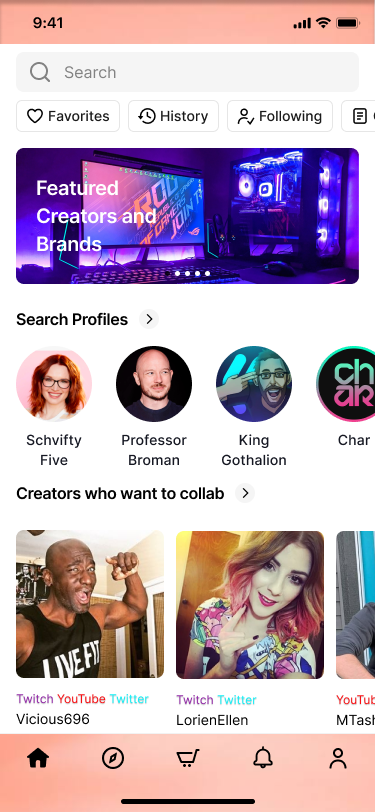
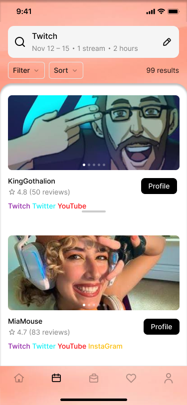
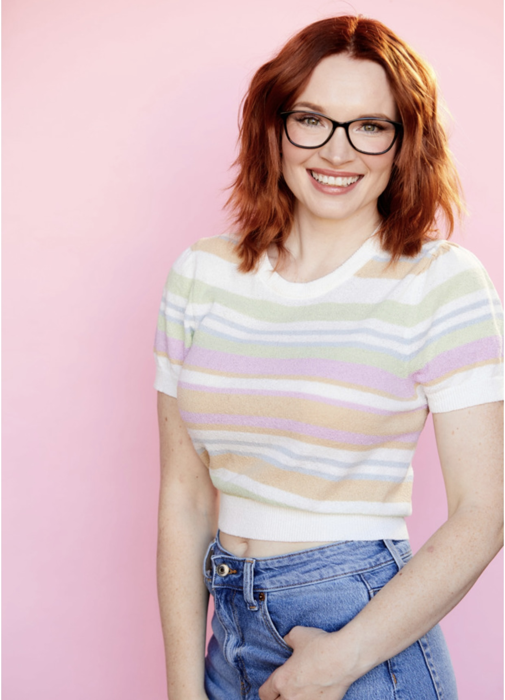
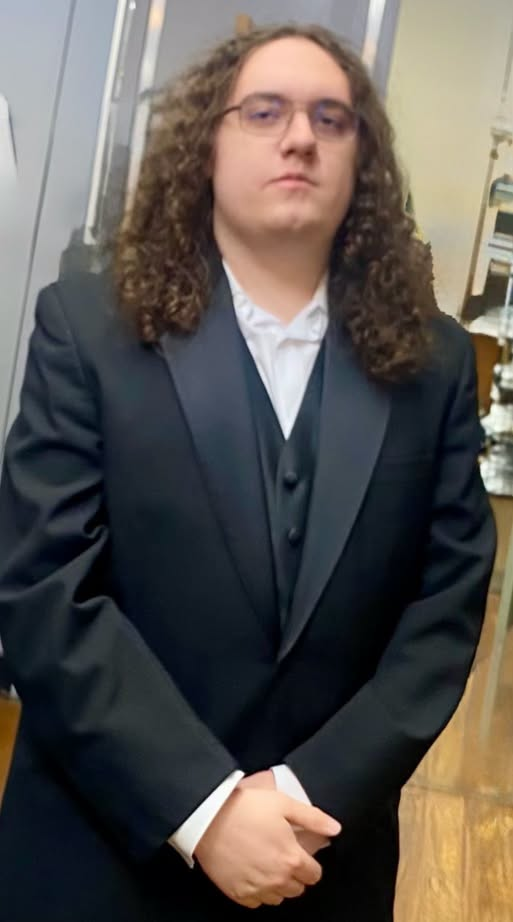
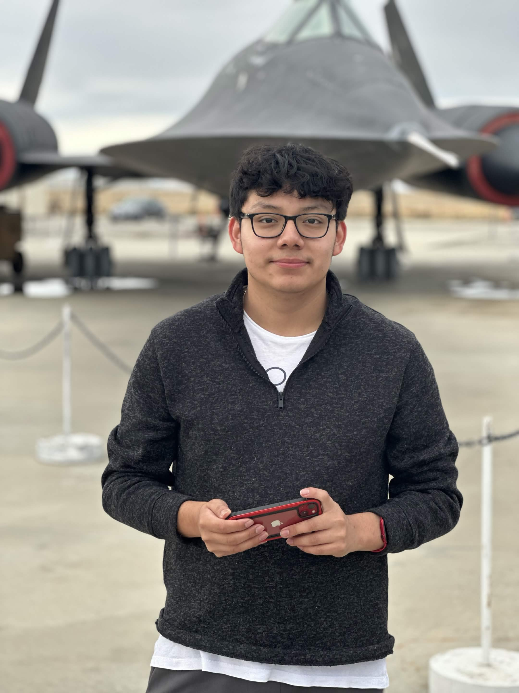

Connect. Create. Collaborate.
Connect with Creators Who Share Your Passion.
KreaterLink helps content creators discover, connect, and collaborate with other creators across platforms like YouTube, Twitch, TikTok, Instagram, and more.

What it is
KreaterLink is a platform that helps content creators discover, connect, and collaborate with other creators. It makes finding the right people to create content with easier through verified profiles, matching tools, and direct messaging.
Who it's for
KreaterLink is designed for content creators across YouTube, Twitch, TikTok, Instagram, X, and other platforms who are looking to collaborate, build friendships, or find meaningful connections with other creators.
Our vision
KreaterLink is FOR content creators and brands
WHO struggle to find trustworthy partners and manage collabs across scattered DMs and apps,
THE KreaterLink app IS A creator collaboration platform
THAT handles discovery, scheduling, and messaging in one place.
UNLIKE DMs and brand-only influencer marketplaces,
OUR PRODUCT builds trust through two-way ratings after every collab.
What you get
-
Verified Creator Profiles
Showcase your content platforms with verified creator badges and profile details.
Example: link your Twitch account and get a verified badge, so other creators know you are the real streamer.
-
Creator Matching
KreaterLink suggests collaborators based on your profile and goals, so you don't have to look yourself.
Example: after you list your goals, KreaterLink suggests a streamer in a similar time zone who also wants to co-stream.
-
Content Discovery
Browse a feed of creators to see who is out there.
Example: scroll the feed and find a streamer who plays the same games you do.
-

-
Content Filters
Narrow a list of creators by platform, content type, game, and collaborative interests.
Example: show only YouTube creators who make horror game videos and are open to collabs.
-
Integrated Calendar
Schedule collaborations based on your availability with an integrated calendar.
Example: post that you are free Friday from 7 to 11 p.m., and other creators can claim a slot.
-
Direct Messaging
Chat with creators and coordinate collaborations through in-app messaging.
Example: message a creator you matched with to suggest a co-stream on Saturday night.
Meet the team

Liz Olin
Project Manager
Liz Olin is a former actress and Twitch streamer turned computer science student at Bellarmine University (Class of 2027) and the Project Manager of KreaterLink. She’s active in the Math Club and BU Leads, received Bellarmine’s Professional Excellence Award, and plans to pursue an MBA in Sustainability.
Elizabeth Hayes
App Developer
Elizabeth Hayes is a fine dining hospitality professional in Louisville, KY, and a business student at Bellarmine University pursuing a minor in computer science. Deeply rooted in the local community, she works an annual American Whiskey festival in Norton Commons and volunteers at the Kentucky Bourbon Festival in Bardstown, KY. Away from work, she plays piano, takes dance classes, and enjoys Louisville’s parks.

Aidan Cissell
App Developer
Aidan Cissell is a computer science major at Bellarmine University and an App Developer on KreaterLink. Outside of class, he enjoys photography and is a fan of the Touhou Project series. He brings that interest in creative communities to the way KreaterLink helps creators connect.

Bernie Jobel Diaz
App Developer
Bernie Jobel Diaz is a junior computer science major at Bellarmine University, and he plans to graduate in 2028. Outside of class, he likes collecting model planes, keeping reptiles and going for walks.